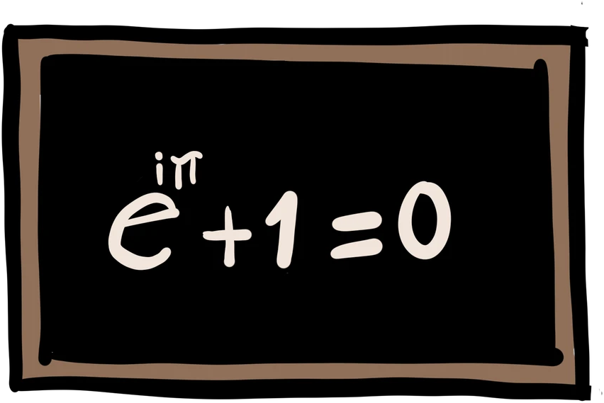
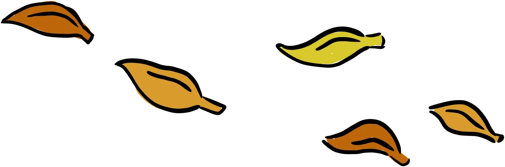

Scientific Research
The collective integrates decades of research experience in several areas of knowledge. Individually, each of us has over a decade (some of us fast approaching two decades) working as full-time scientists in areas like Systems Genomics, Evolutionary Biology, Applied Statistics, Mathematical Epidemiology, Quantum Physics, Supramolecular Chemistry, Immunology, Inflammation, Evo-Devo, Dynamic Systems, Sleep and Circadian Rhythms, Plant Physiology and others.

It is a pretty wild thought that a few early career researchers (a.k.a. ECRs) can have well over a human lifetime-worth of research experience. However, when put in perspective, it’s also pretty humbling when we remind ourselves that there are currently several million full-time researchers in the world, more than at any other single period in history, and therefore millions of person-years collectively dedicated to knowledge every chronological year. We could try to set ourselves apart by delving into the standard academic metrics used to evaluate scientific performance; nevertheless, our goal is orthogonal to that, and we propose a hard fork from the standard academic career.

The Aurora was created to escape the gravitational pull of academicism and its subjective objectivity; in our space anything goes: old projects, new ideas, trifle curiosities, megalomaniac programs. So if you want to assess our science, you really have discuss it with us: you can watch a seminar or lecture, sit for a beer and talk science, propose a research project, informally explore an idea, but whatever it is it won’t look like anything you will see in your local university of research institute.

If believe you want to contribute in a very unconventional way to any one of our research projects, please do get in touch. Alternatively, if you would prefer to use our expertise while maintaining full control of the project – whether it is on a business data strategy problem, academic research of your own, or on training a team for quantitative skills, please check out our Advisory & Consulting and Teaching & Training